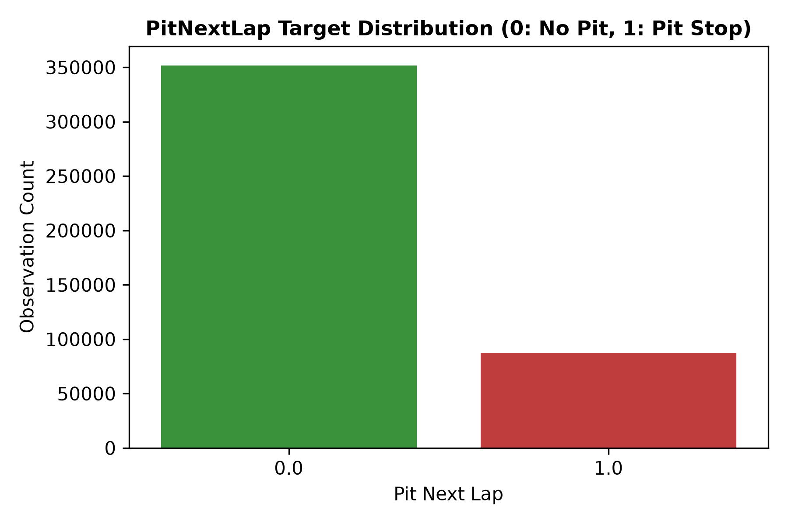
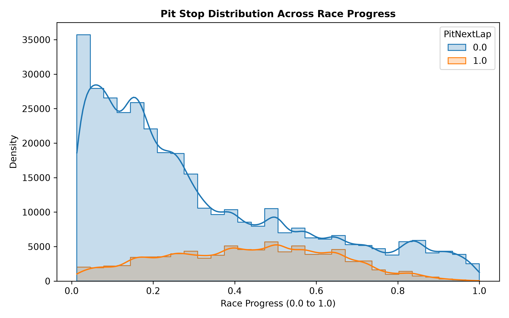
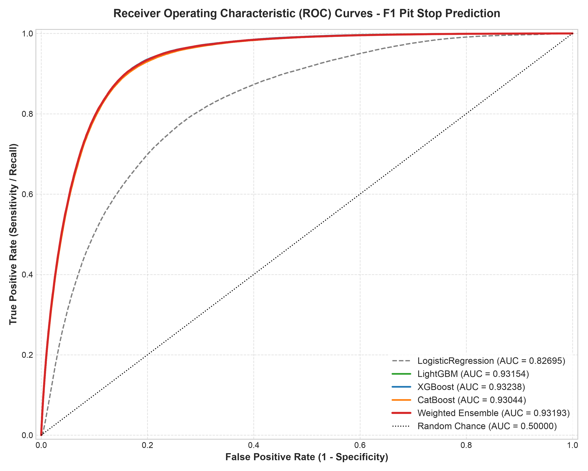
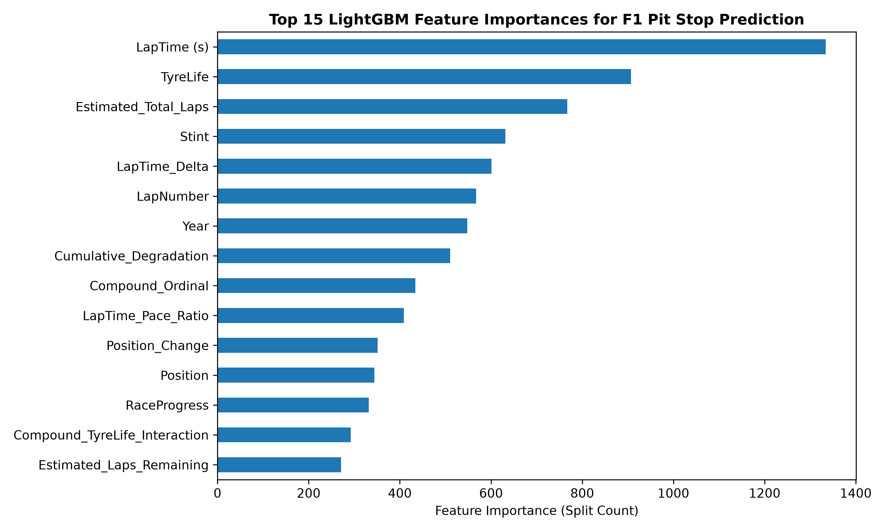
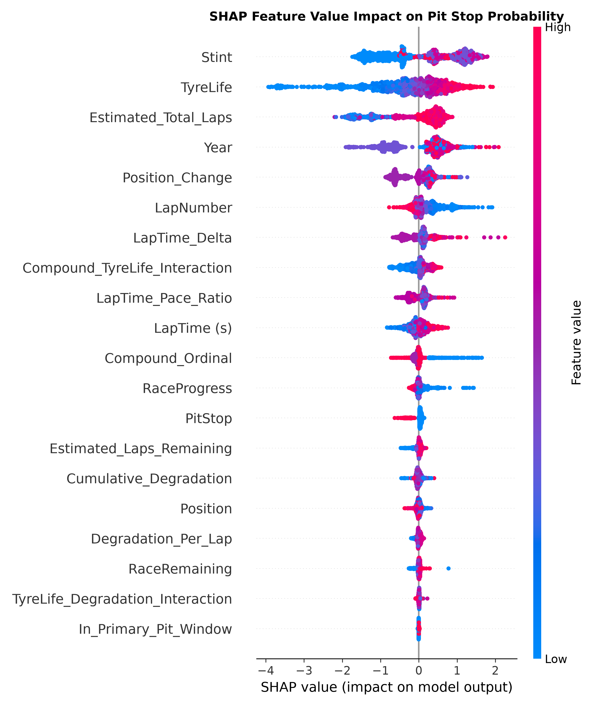

F1 Pit Stop Prediction: Machine Learning Workflow & Strategy Analysis
Kaggle Playground Series S6E5 Portfolio Project
1. Executive Summary
This report documents the machine learning pipeline developed to predict Formula 1 pit stops on the next lap (PitNextLap) using the Kaggle Playground Series S6E5 dataset.
Predicting when an F1 car will enter the pit lane is critical for race telemetry strategy, undercut/overcut detection, and live race simulation. Using data across 104 Grand Prix events from 2022 to 2025 (439,140 training observations and 188,165 test observations), we built a leak-free 5-fold StratifiedGroupKFold cross-validation system grouped by Grand Prix event ID (EventID).
The strongest cross-validated model was XGBoost, which achieved:
- ROC-AUC: 0.93238
- LogLoss: 0.25753
- PR-AUC: 0.73909
We also generated the final test predictions with a weighted ensemble of LightGBM, XGBoost, CatBoost, and Logistic Regression. The ensemble was competitive, but did not outperform XGBoost in the reported out-of-fold evaluation.
2. Dataset Overview & Data Audit
The dataset consists of detailed lap-by-lap race telemetry metrics for drivers across Formula 1 seasons:
- Train Samples: 439,140 rows x 16 columns
- Test Samples: 188,165 rows x 15 columns
- Target Variable:
PitNextLap(1 = Driver pits on next lap, 0 = Driver stays out) - Class Imbalance: ~19.90% positive class (
PitNextLap = 1), ~80.10% negative class (PitNextLap = 0). - Data Integrity: 0 missing values across both train and test sets.

3. Validation Strategy & Leakage Prevention
To prevent intra-race telemetry data leakage between training and validation sets, we enforced StratifiedGroupKFold cross-validation, grouping all rows by unique Grand Prix events (Year + Race):
\[ \text{EventID} = \operatorname{concat}(\text{Year}, \text{"\_"}, \text{Race}) \]
This ensures that entire Grand Prix weekends are kept strictly intact within either the training set or the validation set for each fold.
4. Feature Engineering
Domain-specific feature engineering was performed across three key dimensions:
- Stint & Tire Dynamics:
TyreLife(current age of tire set in laps)TyreLife_Squared($ ^2 $)Degradation_Per_Lap= $ $Compound_TyreLife_Interaction= $ $
- Race Progress & Pit Window Context:
RaceRemaining= $ 1.0 - $Estimated_Total_Laps= $ $In_Primary_Pit_Window(Indicator for $ 0.25 $)
- Lap Pace & Position Dynamics:
LapTime_Pace_Ratio= $ $Is_Podium_Position($ $)Is_Points_Position($ $)

5. Model Evaluation & Benchmark Comparison
We evaluated four distinct algorithms across identical 5-fold StratifiedGroupKFold splits:
| Model | ROC-AUC | LogLoss | PR-AUC |
|---|---|---|---|
| Logistic Regression (Baseline) | 0.82695 | 0.38864 | 0.50320 |
| CatBoost Classifier | 0.93044 | 0.26095 | 0.73403 |
| LightGBM Classifier | 0.93154 | 0.25897 | 0.73527 |
| XGBoost Classifier | 0.93238 | 0.25753 | 0.73909 |
| Weighted Multi-GBDT Ensemble | 0.93193 | 0.25909 | 0.73857 |


6. Model Interpretation (SHAP Analysis)
Tree-based SHAP (SHapley Additive exPlanations) values were calculated for a LightGBM model to inspect how its inputs affect pit-stop predictions. In the summary plot, each point represents one sampled lap:
- Features are ordered by their mean absolute SHAP value.
- Points to the right increase the model output for
PitNextLap; points to the left decrease it. - Red points are high feature values and blue points are low feature values.
- With the default tree explainer configuration, the horizontal axis is the model’s raw output (approximately log-odds), not a direct percentage-point change in probability.

The principal patterns visible in this plot are:
- Stint is the strongest global driver. Later stint numbers generally push the model toward predicting a pit stop, while early stints tend to push it away.
- TyreLife has the clearest directional relationship. High tire age strongly increases the model output, whereas fresh tires decrease it.
- Race length and timing provide substantial context.
Estimated_Total_Laps,LapNumber, andRaceProgressare influential, but they encode overlapping information and should be interpreted together. - Slower-than-reference laps can raise the prediction. High
LapTime_Deltavalues generally push the model toward a pit stop. - A current-lap pit stop usually lowers the next-lap prediction. When
PitStop = 1, the model generally considers another stop on the immediately following lap unlikely. - Year captures season-specific structure. Its relatively high importance may reflect changes in the dataset or racing patterns between seasons; it should not be interpreted as a causal effect.
The saved plot does not show degradation variables as the leading global drivers. Cumulative_Degradation, Degradation_Per_Lap, and the tire-life/degradation interaction rank below Stint, TyreLife, and several race-context variables.
Interpretation limitations
These SHAP values explain a LightGBM model trained on the full training dataset and evaluated on a reproducible 2,000-row training sample. They do not directly explain the weighted ensemble or the best-performing XGBoost model. Because many engineered variables are correlated—for example LapNumber, RaceProgress, RaceRemaining, and estimated laps—SHAP credit can be divided or shifted among related features. The results describe model behavior and associations in this dataset; they do not establish causal F1 strategy effects.
7. Conclusion & Reproducibility
This project demonstrates a reproducible portfolio-scale data science workflow combining modular Python modules (src/data.py, src/features.py, src/validation.py, src/models.py, src/train.py), race-grouped cross-validation, multi-model GBDT ensembling, and SHAP-based model interpretation. The repository includes the generated submission and static report figures; the interpretation notebook contains the analysis code but does not currently store executed outputs or export the SHAP figure itself.